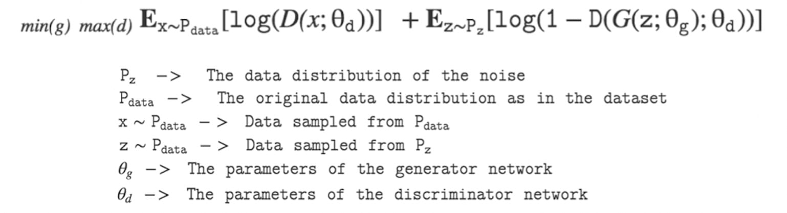

Generative Adversarial Networks
Cet article présente les grands principes liés aux réseaux antagonistes génératifs
“What I Cannot Create, I Do Not Understand”
Richard Feynman
Saliency Map : compréhension d'un concept
Une IA forte est-elle possible ?
Les GANs, generative adversarial networks ou réseaux antagonistes génératifs, sont une classe de réseaux de neurones qui ont gagné en popularité au cours des deux dernières années, et pour de bonnes raisons. En termes simples, ils permettent à un réseau d'apprendre à générer des données fidèles à des données types. Cela signifie que les GANs doivent avoir une bonne compréhension des données ingérées (ou plus précisément de la distribution de ces données). La citation de Richard Feynman résonne bien avec cela.
Le terme "génératif" évoque l'objectif global du modèle : créer de nouvelles données. Les données qu'un GAN apprendra à générer dépendant du choix de l'ensemble d’entraînement - par exemple, si nous voulons qu'un GAN peigne comme Leonardo da Vinci, nous utiliserons un ensemble de données d’entraînement composé d'œuvres du peintre.
Le terme "antagoniste" désigne la dynamique concurrentielle entre les deux algorithmes qui constituent le cadre du GAN : le générateur et le discriminateur. L'objectif du générateur est de créer des exemples qui ne se distinguent pas des données réelles dans le jeu d'entraînement. Dans notre exemple, cela signifie produire des tableaux qui ressemblent à ceux de Léonard de Vinci. L'objectif du discriminateur est de distinguer les faux exemples produits par le générateur des exemples réels provenant de l'ensemble de données d’entraînement. Dans notre exemple, le discriminateur joue le rôle d'un expert en art qui évalue l'authenticité des peintures que l'on croit être celles de Léonard da Vinci. Les deux réseaux essaient constamment de se déjouer l'un l'autre : plus le générateur parvient à créer des données convaincantes, plus le discriminateur doit être en mesure de distinguer les exemples réels des faux.
Enfin, le mot "réseaux" désigne la classe de modèles d'apprentissage automatique la plus couramment utilisée pour représenter le générateur et le discriminateur : les réseaux de neurones. Comme leur nom l'indique, ces modèles s'inspirent du cerveau humain - ils utilisent un ensemble de nœuds interconnectés, ou "neurones", pour traiter leurs calculs.

Bien que les mathématiques qui sous-tendent les GAN soient assez complexes, il existe de nombreuses analogies avec le monde réel qui peuvent rendre l'intuition qui les sous-tend plus facile à comprendre. Nous pouvons prendre l'exemple d'un faussaire d'art (le "générateur") qui essaie de tromper un expert en art (le "discriminateur"). Plus les fausses peintures fabriquées par le faussaire sont convaincantes, plus l'expert en art doit être en mesure d'en déterminer l'authenticité. C'est également vrai dans le cas contraire : plus l'expert en art est en mesure de dire si un tableau particulier est authentique, plus le faussaire doit améliorer son art pour éviter d'être pris en flagrant délit. Une autre métaphore souvent utilisée pour décrire les GAN - une métaphore que Ian Goodfellow lui-même aime utiliser - est celle d'un criminel (le "générateur") qui contrefait de l'argent et d'un détective (le "discriminateur") qui tente de l'attraper. Plus les faux billets ont l'air authentiques, plus la police doit être en mesure de les détecter, et vice versa.
L'une des applications les plus courantes des GAN est la génération d'images. Si on dispose d’une certaine quantité d’images représentant des visages, un GAN peut donc apprendre à générer des images de visages réalistes sans jamais répliquer aucune des images individuellement. En réalité, avec un nombre assez conséquent d’images, le réseau apprend la représentation du concept de visage humain à partir des simples échantillons et est en mesure de générer des images qui respecte ce standard. De plus, cela est fait sans qu’à aucun moment le générateur n'ait un accès direct aux images du jeu d’entraînement. En effet, à la suite du travail du discriminateur, deux boucles de feedbacks transmettent aux deux réseaux de neurones l’identité des designs sur lesquels ils doivent s’améliorer. Le générateur reçoit l’identité des designs sur lesquels il a été démasqué par le discriminateur, le discriminateur reçoit l’identité des designs sur lesquels il a été trompé par le générateur. Les deux algorithmes entretiennent donc une relation gagnant-gagnant d’amélioration continue : le générateur apprend à créer des designs de plus en plus réalistes et le discriminateur apprend à identifier de mieux en mieux les designs réels de ceux provenant du générateur.
A titre d’exemple, ci-dessous, les dernières images de visages hyperréalistes générées par NVIDIA en 2018 ainsi que les images réelles utilisée lors de l’apprentissage. Les résultats sont impressionants et à première vue la difficulté pour démêler le vrai du faux est conséquente. Le site Which Face Is Real a pour objectif de « faire prendre conscience aux gens de la facilité avec laquelle les identités numériques peuvent être falsifiées et de les aider à repérer ces contrefaçons d'un seul coup d'œil ». En plus de proposer une page ludique qui après chaque clic propose à l’utilisateur de distinguer la personne réelle de celle générée, le site liste entre autres différentes astuces afin de démêler le vrai du faux et « voir à travers les illusions d'un monde fabriqué ».
Quelques astuces : regardez de plus près l'arrière plan des images, le contour du visage près des oreilles et parfois les dents où les yeux. Ce sont en effet les composantes les plus difficiles à représenter par le générateur.
En quoi les GANs représentent une avancée importante pour le deep learning ?
L’entraînement de réseaux de neurones profonds exige une abondance de données, et les succès les plus notables ont été obtenus lorsque cette condition était remplie. L'apprentissage supervisé, où il existe de grands ensembles de données étiquetés, comme ImageNet, est un exemple de réussite majeure. Cependant obtenir de telles données labellisées est coûteux et demande une force de travail conséquente.
Les réseaux antagonistes, cependant, partent d'une perspective différente. Les données précieuses sont les données dont les deux réseaux tirent des leçons, c'est-à-dire les données fournies par le réseau générateur. L'ensemble de données réelles auquel le discriminateur a accès peut rester relativement petit par rapport à d'autres méthodes : 70 000 images pour la génération de visage de NVIDIA contre 1 000 000 d’images pour entraîner des modèles comme AlexNet ou ResNet.
En 2014, Christian Szegedy et quelques autres chercheurs chez Google, ont fait remarquer à travers un article scientifique que les réseaux de neurones pouvaient être trompés facilement en ajoutant simplement une petite quantité de bruit à une image. Par exemple en ajoutant un léger bruit imperceptible à l’œil nu à une image appartenant à la classe « bus » ce dernier pourra être perçu par le réseau de neurones comme appartenant à la classe « autruche » et ce avec une confiance bien meilleure que lorsqu’il prédisait la classe correcte. Mathématiquement, ce changement de classe peut être implémenté en utilisant la méthode du Fast Gradient Sign Method (FGSM ajoute simplement de façon itérative une petite quantité de bruit dans la direction du gradient de la fonction objectif – ici la fausse classe désirée - par rapport aux valeurs d'entrée). L'une des solutions proposées pour corriger ces réseaux de neurones profonds est d’entraîner le réseau sur des « adversarial examples » ou exemples contradictoires. Ces derniers peuvent être générés à l'aide de modèles génératifs dont les plus notables sont les PixelCNN, les Variational Auto-Encoders et bien évidemment les Generative Adversarial Networks.
Les limites des GANs et les champs de recherche possibles
Les GANs sont basés sur ce qu’on appelle un « zero-sum non-cooperative game ». En bref, si l'un gagne (générateur ou discriminateur), l'autre perd. Un jeu à somme nulle est aussi appelé minimax. Votre adversaire veut maximiser ses actions et vos actions cherchent à minimiser les actions de l’adversaire. En théorie des jeux, le modèle GAN converge lorsque le discriminateur et le générateur atteignent un équilibre de Nash. C'est le point optimal pour l'équation minimax ci-dessous.

Cependant pour que la convergence globale su système arrive à son terme, il faut que chaque réseau progresse globalement au même rythme de convergence lors de la phase d’entraînement. Si, toutefois, l’un des deux réseaux converge plus rapidement, il devient alors trop fort et prend le pas sur l’autre empêchant la convergence globale du système.
Une des conséquences de la nécessité d’une convergence homogène et simultanée des réseaux est la difficulté de travailler avec des données complexes, en particulier de haute résolution dans le cas des images. Plus le nombre de pixels au sein d’une image est élevé plus les détails seront fournis et la convergence lente pour le générateur alors que le discriminateur pourra lui effectuer sa tâche plus facilement. Néanmoins, aux cours des dernières années, des solutions ont été apportées à ce problème en n’augmentant que progressivement la résolution des images. Ainsi on se préoccupe d’abord des traits globaux du design pour ensuite se concentrer sur les détails locaux.
L’utilité de la génération de nouvelles données réside dans la variabilité de ces données. Néanmoins l’objectif du générateur n’est pas de créer de la nouveauté en termes de diversité mais seulement de tromper le discriminateur. Ainsi, bien que le générateur ne puisse pas fournir de copie d’une donnée existante car il n’y a tout simplement pas accès, la diversité n’est pas toujours garantie : c'est le mode collapse. Si les images générées sont bien « nouvelles » au sens premier du terme (aucune ne sont exactement similaires), il se peut que le générateur prenne peu en compte l’impulsion aléatoire initiale et génère ainsi fréquemment des images très similaires entre elles. La raison à cela est qu’une image générée qui trompera facilement le discriminateur aura tendance à être régénérée, non pas à l’identique, mais de façon très proche. On obtiendra alors un réseau qui génère des images très semblables : c’est que qu’on appelle le mode collapse. Ce phénomène est particulièrement observé lorsque la diversité intrinsèque des données générées est moins élevée. Par exemple, si l’on cherche à générer une fleur aux pétales blancs et au pistil jaune, la diversité des images créées sera moindre que pour un oiseau orangé. Une raison à cela est qu’un oiseau peut se mouvoir librement dans son environnement - il en découle une diversité plus grande au sein de la base d’entraînement.